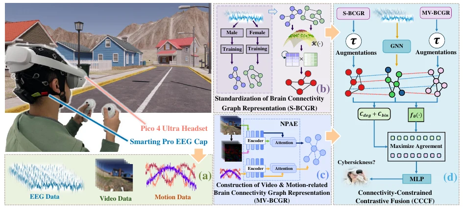

IEEE TVCG · 2025-11 · 已发表
Multimodal Contrastive Learning for Cybersickness Recognition Using Brain Connectivity Graph Representation
王子腾：第三作者 / Third author
IEEE Transactions on Visualization and Computer Graphics 31(11), pp. 10080-10089 · 10.1109/tvcg.2025.3616797
Abstract
Cybersickness significantly impairs user comfort and immersion in virtual reality (VR). Effective identification of cybersickness leveraging physiological, visual, and motion data is a critical prerequisite for its mitigation. However, current methods primarily employ direct feature fusion across modalities, which often leads to limited accuracy due to inadequate modeling of inter-modal relationships. In this paper, we propose a multimodal contrastive learning method for cybersickness recognition. First, we introduce Brain Connectivity Graph Representation (BCGR), an innovative graph-based representation that captures cybersickness-related connectivity patterns across modalities. We further develop three BCGR instances: E-BCGR, constructed based on EEG signals; MV-BCGR, constructed based on video and motion data; and S-BCGR, obtained through our proposed standardized decomposition algorithm. Then, we propose a connectivity-constrained contrastive fusion module, which aligns E-BCGR and MV-BCGR into a shared latent space via graph contrastive learning while utilizing S-BCGR as a connectivity constraint to enhance representation quality. Moreover, we construct a multimodal cybersickness dataset comprising synchronized EEG, video, and motion data collected in VR environments to promote further research in this domain. Experimental results demonstrate that our method outperforms existing state-of-the-art methods across four critical evaluation metrics: accuracy, sensitivity, specificity, and the area under the curve. Source code: https://github.com/PEKEW/cybersickness-bcgr.
THE IDEA
把 EEG、视频与运动数据表示为脑连接图，再用带连接约束的对比学习融合信息，识别 VR 晕动症。
Brain connectivity graph representations align EEG, video, and motion for multimodal cybersickness recognition.
EEG、视觉与运动数据都含有晕动症线索，但简单拼接特征不一定能建立模态间的关系。该方法让不同模态先进入可比较的连接图表示，再学习一致的表示。

同步采集三个模态
在 VR 中记录 EEG、第一人称视频与运动数据，为同一时间片建立对齐的样本。
构建 BCGR
从 EEG 构建 E-BCGR；用标准化分解得到 S-BCGR；从视频和运动构建 MV-BCGR。
用连接约束做对比融合
Connectivity-Constrained Contrastive Fusion（CCCF）将表示对齐到共同潜在空间，并以 S-BCGR 约束连接结构，完成晕动症识别。
实验告诉我们什么
| 评测 | 结果 / 观察 | 解释范围 |
|---|---|---|
| 准确率 | 84.17% | 作者稿中的三模态完整模型。 |
| 敏感度 / 特异度 | 85.09% / 84.18% | 分别衡量对阳性和阴性样本的识别。 |
| AUC | 92.22% | 在论文数据与评测协议下的结果。 |
书目信息来自 Crossref；方法与指标来自本地作者稿图 1、表 1–3 和结论。
适用边界
数据使用是否出现晕动症的二分类标签，不能直接预测症状严重程度。实验识别性能不等于临床诊断能力，也不代表对所有用户、设备和 VR 内容都有同样表现。
我的贡献
参与搭建同步 EEG、视频与运动数据的 VR 晕动症多模态数据集。
引用这篇论文
Peike Wang, Ming Li, Ziteng Wang, Yong-Jin Liu, Lili Wang. Multimodal Contrastive Learning for Cybersickness Recognition Using Brain Connectivity Graph Representation. IEEE Transactions on Visualization and Computer Graphics, 2025. DOI: 10.1109/tvcg.2025.3616797
@article{cybersicknessbcgr2025,
title = {{Multimodal Contrastive Learning for Cybersickness Recognition Using Brain Connectivity Graph Representation}},
author = {Peike Wang and Ming Li and Ziteng Wang and Yong-Jin Liu and Lili Wang},
journal = {IEEE Transactions on Visualization and Computer Graphics},
year = {2025},
volume = {31},
number = {11},
pages = {10080--10089},
doi = {10.1109/tvcg.2025.3616797},
url = {https://doi.org/10.1109/tvcg.2025.3616797}
}